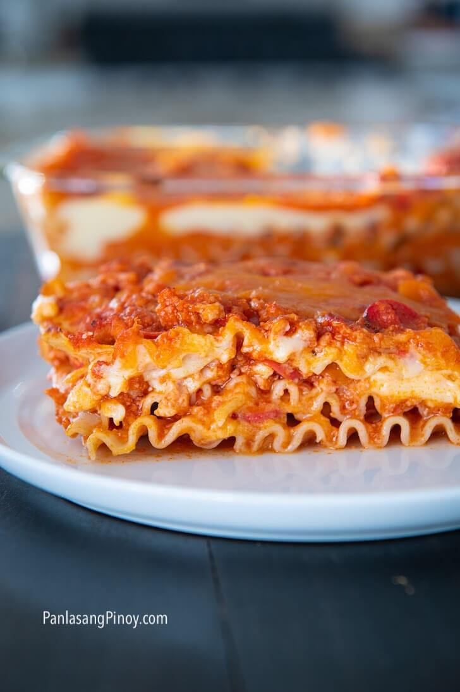

No-Bake Lasagna

Real no-bake lasagna! Garfield's and your favorite!
Ingredients
For lasagna:
- 9 pieces lasagna
- 3/4 cup cheddar cheese (shredded)
- Water for boiling lasagna
For meat sauce:
- 3/4 lb ground pork
- 3 pieces hotdog sliced
- 15 ounces tomato sauce
- 1 cup water
- 1 piece onion chopped
- 4 cloves garlic minced
- 3 tbsp. cooking oil
- 1 tbsp. sugar
- Salt and ground black pepper to taste
White sauce:
- 1/4 cup salted butter
- 2 cups fresh milk
- 3 1/2 tbsp. all-purpose flour
- 1/2 cup cheddar cheese shredded
Instructions
Making the meat sauce:
- Heat oil in a cooking pot.
- Saute onion and garlic until onion softens.
- Add ground pork. Cook until it turns light brown.
- Add hotdog and saute with the rest for one minute.
- Pour tomato sauce and water. Boil. Cover and cook between low to medium heat for 40 minutes.
- Add sugar and season with ground black pepper and salt. Set aside.
Making the lasagna:
- Boil 1 1/4 pint water.
- Add 1/2 teaspoon salt.
- Put lasagna in boiling water and continue to boil per package instructions.
- Drain the water. Set lasagna aside.
Making the white sauce:
- Melt butter in saucepan. Add half of the flour. Stir until blended.
- Add remaining flour and continue to stir. Gradually pour milk while stirring until sauce thickens.
- Add 1/2 cup cheddar cheese. Stir until melted.
Assembling the lasagna:
- Spread meat sauce on an 8x8 baking pan.
- Layer the lasagna and spread meat sauce over the lasagna.
- Spread the white sauce and sprinkle some shredded cheese on top.
- Arrange the second layer with the same order.
- Arrange the last layer. Top with with sauce first then meat sauce. Sprinkle cheese all over.
- Cover the pan with aluminum foil. Make sure that the foil does not touch the lasagna toppings.
- Place in turbo broiler in 400F for 35 minutes.
- Remove the foil. Set to 350F and continue to broil for 12 minutes.
- Remove from broiler. Slice and serve.